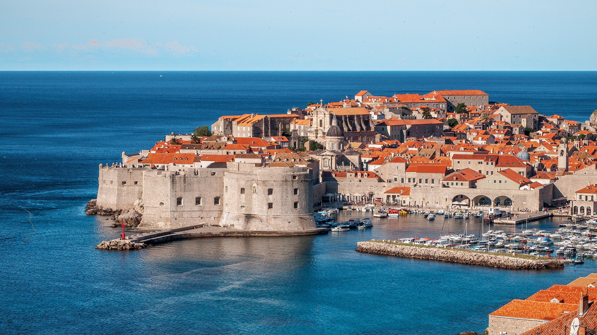
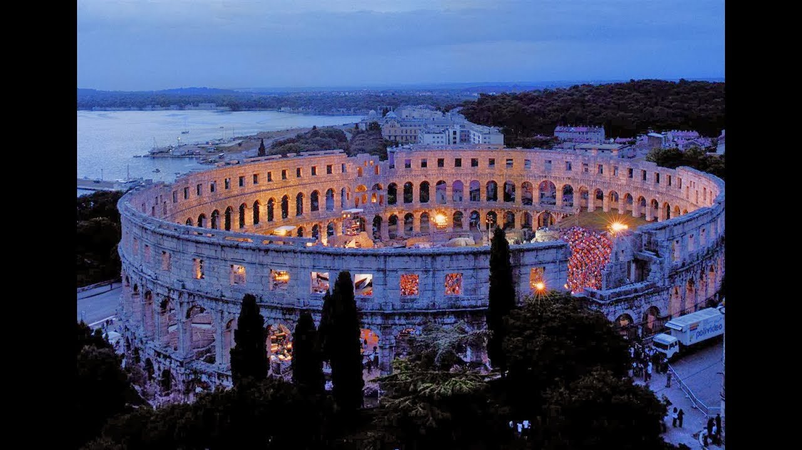
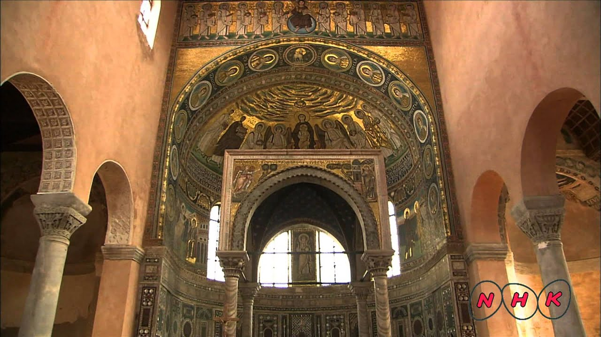
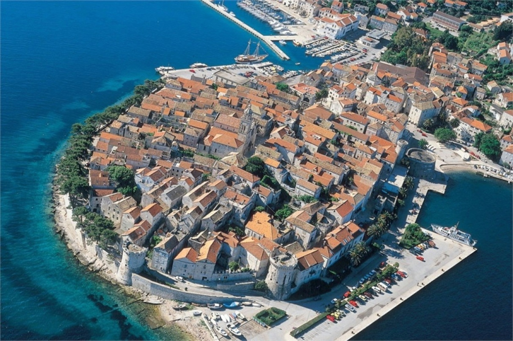
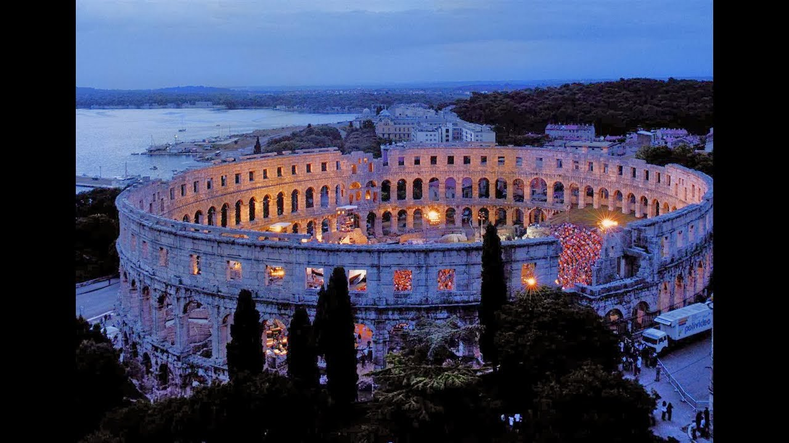
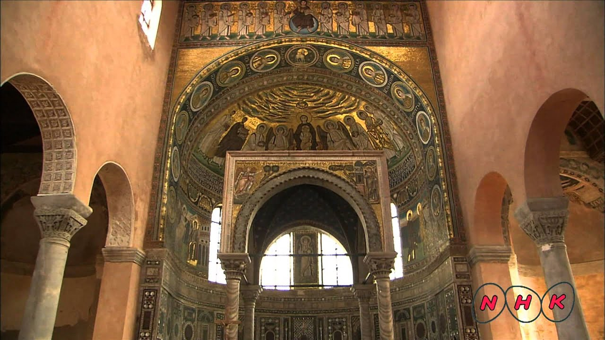
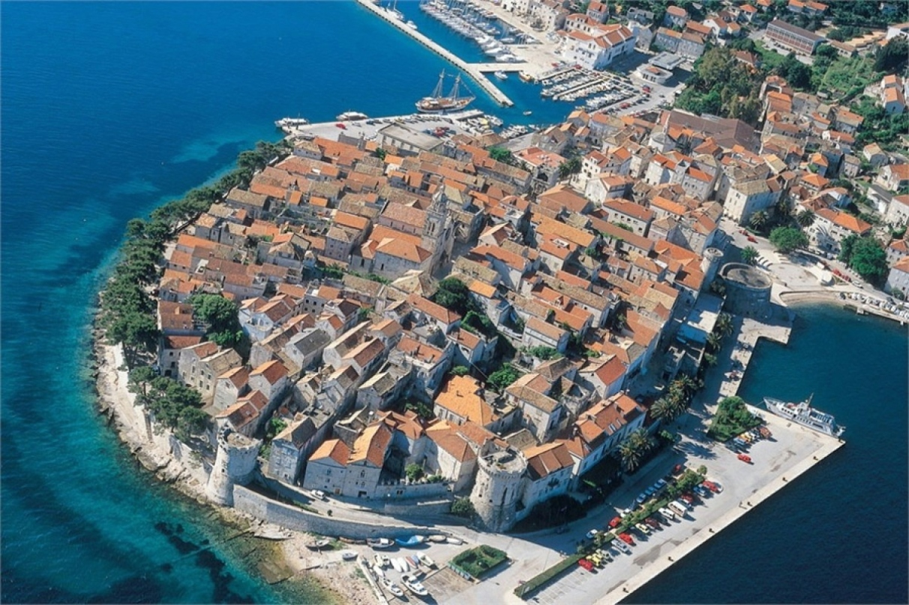

Sight Seeing
Tourist Destinations

 





Dubrovnik
Visiting Dubrovnik may well be the highlight of your Croatian holiday. The "pearl of the Adriatic" is a place of jaw-dropping beauty, making it by far Croatia's top sight. With massive walls punctuated with turrets, towers and gates enclosing streets, churches and palaces packed with art treasures, you'll never run out of things to see and do in Dubrovnik.
Diocletian's Palace
Diocletian’s Palace contains some of the most impressive Roman architecture to be found on the Adriatic coast. Its highlights include the oldest Catholic cathedral in the world, 3500 year-old Egyptian sphinxes, and vestiges of Roman, Venetian, and medieval architecture. The Old City is a Unesco Heritage Site and is also famous as a setting for the popular series ‘Game of Thrones’. And of course, this being the Balkans, it contains lots intriguing twists of history.
Hvar
Hvar is Croatia’s most happening island, a destination for celebs, moneyed revellers and visitors familiar with five-star luxury. There’s still a little spontaneous magic left of pre-boom Hvar, found in its beach bars and secluded getaways, away from the focal, yacht-lined destination of Hvar Town.
Pula Arena
The Pula Arena is the amphitheatre located in Pula, Croatia. The Arena is the only remaining Roman amphitheatre to have four side towers and with all three Roman architectural orders entirely preserved. It was constructed in 27 BC – 68 AD and is among the world's six largest surviving Roman arenas. A rare example among the 200 surviving Roman amphitheatres
Euphrasian Basilica
The Euphrasian Basillica is a Roman Cathokuc basukkuca in the city of Poreč, Croatia. Three difirent basilica's once stood where the Euphrasian Basilica now stands. An earthquake destroyed the first but the floor mosaic survived. The floor and walls are ornatly decorated and a site to behold.
Korkula
Korcula is considered to be the birthplace of Marco Polo, and history and tradition are apparent when you walk along Korcula streets and squares. Enjoy views of a dramatic cliffy Peninsula, and quiet alleyways of old town teeming with flowers, vines, coral shops, and old venetian blinds.